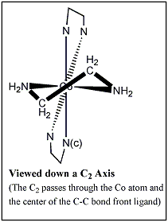

|
|
B. The Symmetry Properties of Metal Tris Chelates
1. With Symmetrical Chelating Ligands: Molecules of D3 Symmetry
b. The C2 Operations
Continuing with our example of one of the isomers of the Co(H2NCH2CH2NH2)33+ ion
(Remember that this molecular ion has D3 symmetry and the following symmetry operations:
E, C3, C32, and 3 C2's )
a. The C3 operations are presented on the previous page
b. Now we will animate one of the C2 Operations (and leave you to find the other two!)
Useful commands for viewing the operations:
jmolButton("spin off; reset; center atomno=1"
,"Reset Orientation")
Animation of one of the C2 Operations:
1. First, let us position the molecule to view down the C2 axis
2. Without Resetting, Execute a C2
3. We leave it up to you to locate the other two C2 axes/rotations
(Hint; position the molecule along a C2 axis with your mouse and use the "Without Resetting, Execute a C2" button)
Return to Index
|